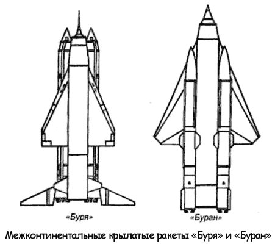

Проект «Буран»
Альтернативный проект межконтинентальной крылатой ракеты, разрабатываемой в ОКБ-23 у Владимира Мясищева, получил название «Буран».
Крылатая ракета «40» («М-40») была спроектирована по нормальной самолетной схеме с треугольным крылом с углом стреловидности по передней кромке 70 и тонким сверхзвуковым профилем, корпус выполнен из титановых сплавов.
Оперение — крестообразное, с аэродинамическими рулями.
Конструкция ракеты аналогична конструкции «Бури», но стартовый вес был заложен несколько больший (125 тонн), так как предполагалось разместить более мощную и тяжелую боевую часть, оснащенную взрывными устройствами контактного и дистанционного типа.
В качестве маршевого двигателя использовался прямоточный воздушно-реактивный двигатель «РД-018А», разрабатывавшийся в ОКБ Бондарюка с лобовым воздухозаборником, на входе которого находилось центральное многоскачковое тело. Внутри последнего размещалась боевая часть весом 3500 килограммов. Горючее находилось в кольцевых фюзеляжных топливных баках.
Для старта и разгона маршевой ступени «42» («М-42») до скорости запуска сверхзвукового прямоточного двигателя планировалось использовать четыре ускорителя «41» («М-41») с ЖРД тягой по 55 тонн, разработанные на базе самолетных ускорителей «СУМ». Двигатели первой ступени были разработаны в ОКБ-456 главного конструктора Валентина Глушко.
После запуска маршевого двигателя на высоте 18 200 метров ускорители отстреливались, и самолет-снаряд должен был лететь к цели, расположенной на удалении 7500–8000 километров, в автоматическом режиме со скоростью 3290 км/ч и на высотах 24–25 километров.
Поддержание заданного курса осуществлялось с помощью гироинерциальной навигационной системы с астрокоррекцией от звездных датчиков, размещавшихся в отсеке на верхней части фюзеляжа. Система астрокоррекции для ракеты была разработана под руководством Рубена Чачикяна.
В 1957 году опытное производство ОКБ-23 построило одну крылатую ракету, рассчитанную под новую боевую часть и получившую обозначение «40А». В том же году начались ее стендовые испытания.
В процессе создания «Бурана» удалось получить ответы на множество принципиально новых теоретических вопросов и решить ряд конструктивно-технологических задач. Совместно с институтами авиационных материалов и авиационной технологии создавались новые конструкционные материалы, автоматические станки, технология роликовой и точечной сварки тонкостенных конструкций ракеты.
Специально для проекта «М-40» разработали рулевые приводы и смазку, обеспечивающие функционирование органов управления при температуре +400 °C. В процессе опытно-конструкторских работ для оценки различных характеристик ракеты создавались новые методики. В частности, для определения напряженно-деформированного состояния треугольных крыльев впервые в СССР был разработан алгоритм прочностного расчета, ставшего основой метода конечных элементов.

Осенью 1957 года работы по ракете «Буран» были прекращены.
В то время конструкторское бюро Мясищева оказалось сильно загружено работой над стратегическим бомбардировщиком «М-50», и коллектив, по свидетельству Бориса Чертока, «не очень горевал» из-за того, что планы руководства изменились.
Всего до закрытия работ были изготовлены две крылатые ракеты «Буран», но ни одна из них так и не поднялась в небо…